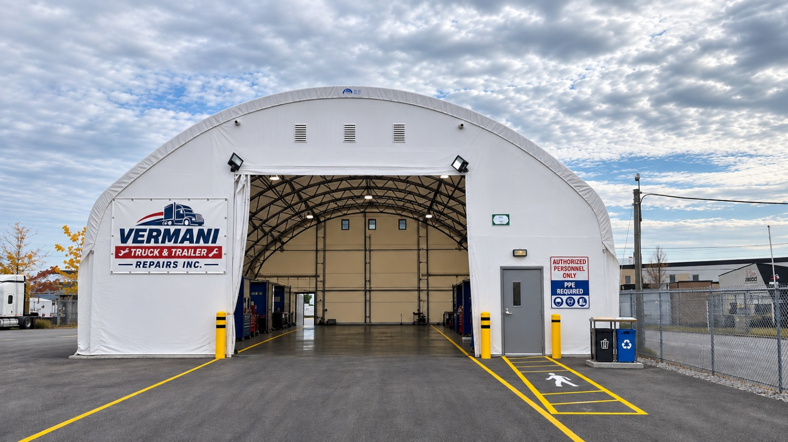
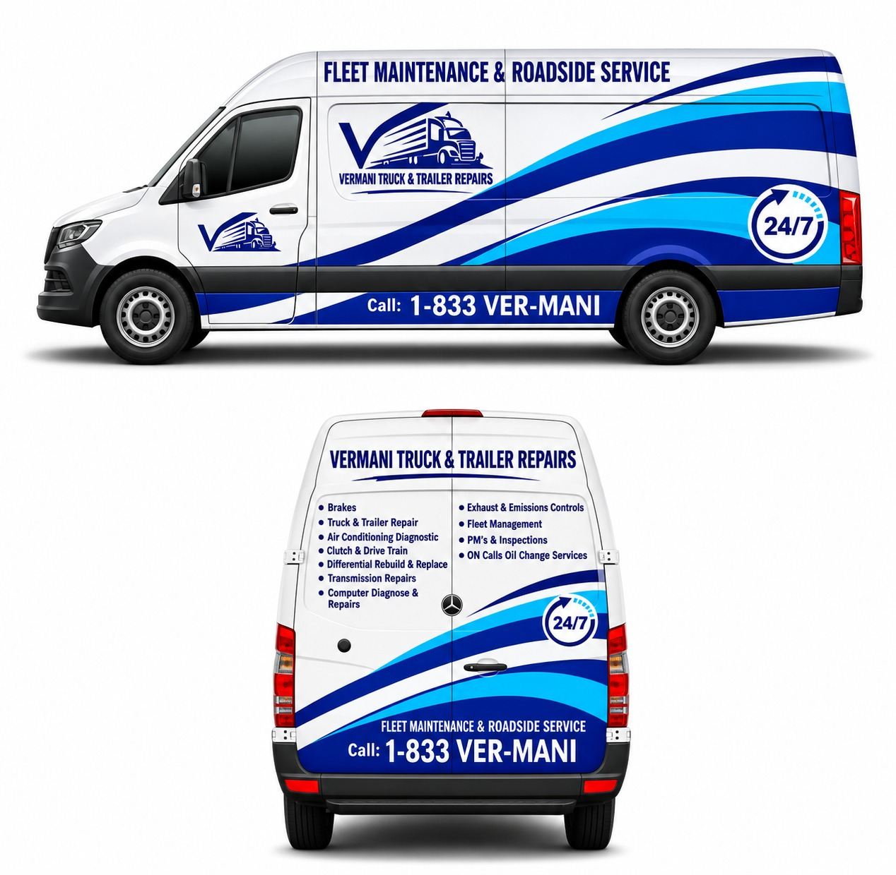

Keeping Your Fleet Moving.
Keeping Your Business Running.
Professional truck & trailer repairs, commercial vehicle inspections and preventive maintenance in Etobicoke, Ontario.
Conveniently located near Highways 401, 409 & 427.
Authorized DriveON Inspection Centre
Professional Truck & Trailer Repairs
Convenient Highway Accessibility

Your reliable partner for truck & trailer repairs.
Vermani is committed to professional repair, dependable maintenance and keeping commercial vehicles on the road, so operators lose less time to downtime.
- Brakes, filters and oil changes
- General truck and trailer repairs
- DriveON inspection services
Our services
MTO / DriveON Inspections
Commercial vehicle inspection services through our authorized facility.
Learn more →Authorized DriveON commercial vehicle inspection centre.
We help commercial vehicle operators access applicable DriveON inspection services through our authorized facility.

Why truck owners & fleet operators choose Vermani.
Comprehensive truck & trailer services
Focus on minimizing downtime
Preventive maintenance support
Commercial vehicle inspection services
Convenient Etobicoke location
Support for owner-operators and fleet managers
Strategically located near major GTA highways.
Our Etobicoke location offers convenient access for operators travelling through Toronto, Mississauga, Brampton and the Greater Toronto Area.
Google Map to be added once the address is confirmed
Reliable support for your fleet.
Preventive maintenance and timely repairs help trucking companies stay on top of maintenance requirements.
Discuss Your Fleet RequirementsFrequently asked questions
What services does Vermani provide?
Brake repair and drum servicing, oil and filter changes, preventive maintenance, general truck and trailer repairs, and DriveON inspection services.
Does Vermani offer DriveON inspections?
Yes. We are an authorized DriveON inspection centre. Contact us to confirm which inspections apply.
Where are you located?
In Etobicoke, Ontario, close to Highways 401, 409 and 427.
Do you work with owner-operators and fleets?
Yes, both are welcome.
How can I request an appointment?
Call 1-833-837-6264 or use our contact form.
Need reliable truck & trailer service?
Contact Vermani for inspections, repairs and maintenance support.